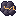

Ferro
O metal-base de tudo. Sai das paredes da cratera, mais farto longe do centro.
77 caracteresSilício
Cristal fosco, matéria-prima de máquinas e chips. Mina-se junto com o ferro.
76 caracteresGelo
Água congelada da faixa gelada. Vira água no Derretedor.
56 caracteres
Magmatita
Mineral quente, achado no basalto e em volta das fumarolas. Alimenta o calor.
77 caracteresCobre
Metal condutor, só existe no salar da caverna. Vira lingote na Fundição.
72 caracteres